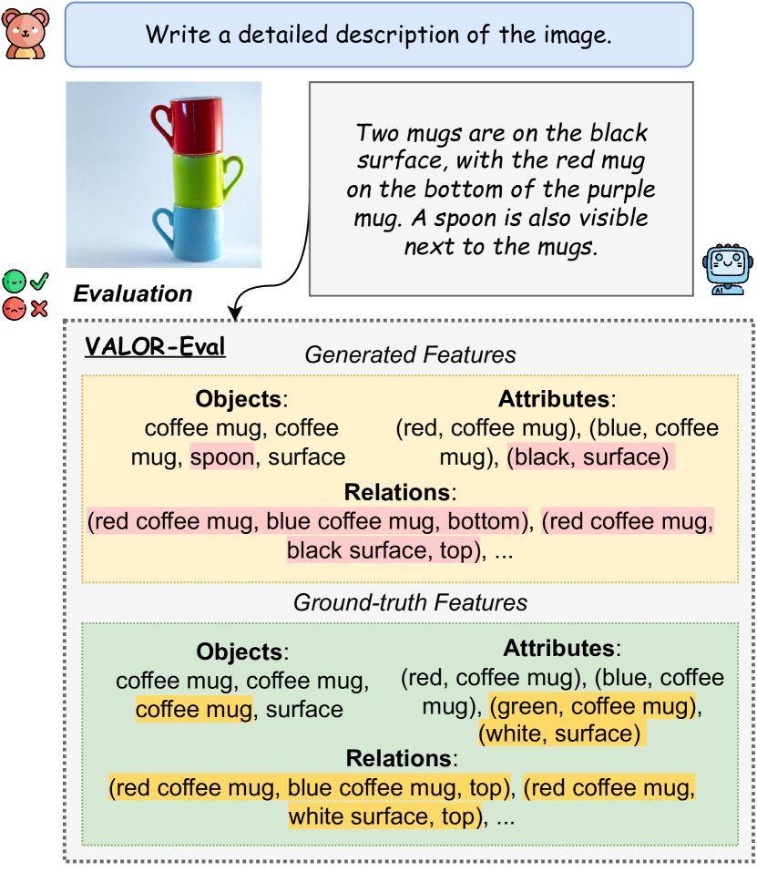
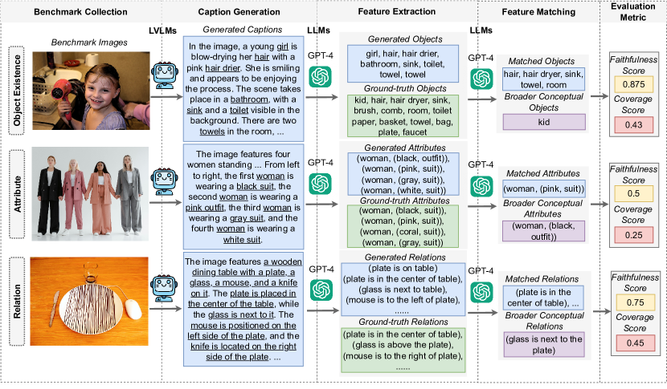
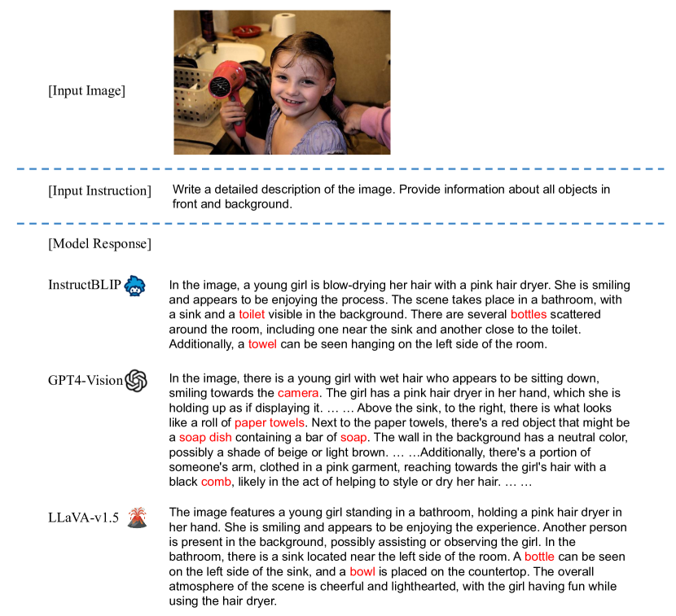
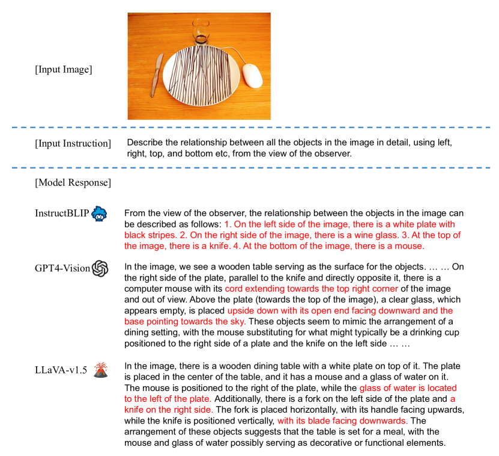
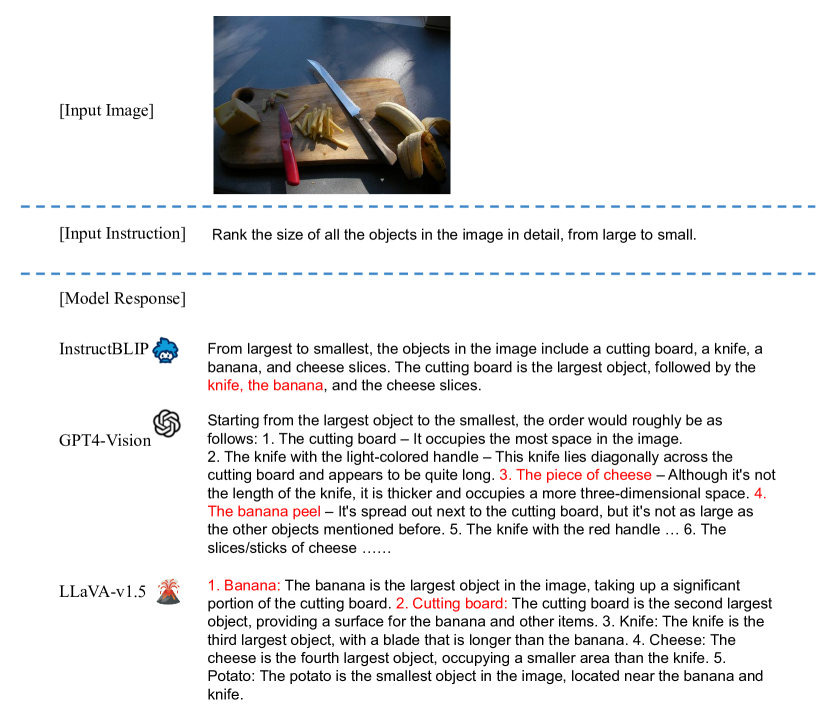

VALOR-Eval: Holistic Coverage and Faithfulness Evaluation of
Large Vision-Language Models
Abstract
Large Vision-Language Models (LVLMs) suffer from hallucination issues, wherein the models generate plausible-sounding but factually incorrect outputs, undermining their reliability. A comprehensive quantitative evaluation is necessary to identify and understand the extent of hallucinations in these models. However, existing benchmarks are often limited in scope, focusing mainly on object hallucinations. Furthermore, current evaluation methods struggle to effectively address the subtle semantic distinctions between model outputs and reference data, as well as the balance between hallucination and informativeness. To address these issues, we introduce a multi-dimensional benchmark covering objects, attributes, and relations, with challenging images selected based on associative biases. Moreover, we propose an large language model (LLM)-based two-stage evaluation framework that generalizes the popular CHAIR metric Rohrbach et al. (2018) and incorporates both faithfulness and coverage into the evaluation. Experiments on 10 established LVLMs demonstrate that our evaluation metric is more comprehensive and better correlated with humans than existing work when evaluating on our challenging human annotated benchmark dataset. Our work also highlights the critical balance between faithfulness and coverage of model outputs, and encourages future works to address hallucinations in LVLMs while keeping their outputs informative.111Our dataset and code can be found here: https://github.com/haoyiq114/VALOR.
1 Introduction

Large Vision-Language Models (LVLMs) Liu et al. (2023b); OpenAI (2023) have shown remarkable performance across a broad range of vision-language tasks. Despite the promising progress, the issue of hallucinations has emerged as a critical concern. Hallucination refers to the generation of plausible sounding but inaccurate or fabricated textual descriptions for a given image, which can compromise the reliability and trustworthiness of the models.
| Evaluation | Hallucination Type | Human | Faithfulness | Coverage | Open Vocab. | ||
| Method | Object | Attribute | Relation | Annotation | Generation | ||
| POPE | ✓ | ✗ | ✗ | ✗ | ✓ | ✗ | ✗ |
| HaELM | ✓ | ? | ? | ✗ | ✓ | ✗ | ✓ |
| HallusionBench | ✓ | ? | ? | ✓ | ✓ | ✗ | ✗ |
| Halle-Switch | ✓ | ✗ | ✗ | ✗ | ✓ | ✓ | ✓ |
| NOPE | ✓ | ✗ | ✗ | ✗ | ✓ | ✗ | ✗ |
| Bingo | ? | ? | ? | ? | ✓ | ✗ | ✗ |
| FaithScore | ✓ | ✓ | ✓ | ✗ | ✓ | ✗ | ✓ |
| AMBER | ✓ | ✓ | ✓ | ✓ | ✓ | ✓ | ✗ |
| MERLIM | ✓ | ✗ | ✗ | ✗ | ✓ | ✗ | ✗ |
| Ours (VALOR-Eval) | ✓ | ✓ | ✓ | ✓ | ✓ | ✓ | ✓ |
Recent studies have proposed various methods to evaluate models’ generative hallucinations Wang et al. (2023a); Zhai et al. (2023); Jing et al. (2023) and discriminative hallucinations Li et al. (2023b); Guan et al. (2023); Lovenia et al. (2023). However, they predominantly focus on hallucinations concerning object existence and their faithfulness within generated content, often neglecting other critical types of hallucinations and the assessment of coverage. This oversight can result in a lack of attention to the variety and depth of hallucinations that may occur beyond object identification, such as attributes and relations. Furthermore, these evaluation methods are often constrained by a predefined vocabulary, thus are inherently limited to fully appreciate the richness of the free-form generated captions. Specifically, the evaluation metrics may not capture novel expressions that extend beyond the predetermined vocabulary.
In contrast to prior studies, we introduce a human-annotated multi-dimensional evaluation benchmark VALOR-Bench222VALOR is short for vision-language attribute, relation, and object coverage and faithfulness evaluation. by breaking down hallucinations into three categories: object (existence), attributes (color and count), and relations (positional and comparative). In addition, to make the test cases challenging, we utilize the associative biases presented in training datasets to select images with only one component of commonly co-occurred pairs or groups, leading models to mistakenly generate associated elements that are not present. Our experimental findings validate the effectiveness of this methodology in exposing the susceptibility of current LVLMs to such biases.
In addition to constructing the benchmark dataset, we also propose a new evaluation framework, VALOR-Eval. Existing evaluation frameworks such as the widely used CHAIR Rohrbach et al. (2018) metric, exhibit several major constraints. First, they rely on a predefined vocabulary, limiting their ability to identify hallucinations in an open vocabulary setting where semantic nuances – such as synonyms and variations – are prevalent in model outputs and references. Additionally, focusing exclusively on hallucination overlooking the aspect of coverage, resulting in a preference for precise but uninformative model outputs. To address these issues, our propose VALOR-Eval metric generalizes CHAIR by incorporating an LLM in a two-stage design, enhancing the capability to evaluate open vocabulary hallucination across object, attribute, and relation dimensions while also considering coverage. We provide a detailed comparison of existing evaluation methods in Table 1.
We conduct comprehensive evaluations on 10 established LVLMs across multiple dimensions with VALOR-Bench. Our findings reveal that some LVLMs tend to prioritize precision over coverage, leading to predictions with high accuracy but limited scope. This observation underscores the need for the community to focus on achieving an balance between faithfulness and coverage in LVLMs. Our contributions are threefold:
-
•
We introduce VALOR-Bench, a comprehensive human-annotated dataset covering relation, attribute, object with challenging images selected based on associative bias.
-
•
We propose an LLM-based two-stage evaluation framework VALOR-Eval that generalizes previous methods to consider the precision and informativeness trade-off and handle object, attribute, and relation evaluation in open vocabulary settings.
-
•
We evaluate 10 mainstream LVLMs on VALOR-Bench, focusing on the balance between faithfulness and coverage score. We notice that even GPT-4V(ision) OpenAI (2023) still suffers from hallucination, achieving a relatively low faithfulness score despite covering more information within an image comparing to other models.
2 Existing LVLMs Hallucination Evaluation Benchmarks and Metrics
As shown in Table 1, existing studies Li et al. (2023b); Wang et al. (2023a); Zhai et al. (2023); Lovenia et al. (2023); Villa et al. (2023) have primarily focused on object-level hallucination, with only a few recent studies Jing et al. (2023); Wang et al. (2023b) recognizing the importance of extending hallucinations to other dimensions. Our benchmark VALOR-Bench covers hallucination evaluations of objects, attributes, and relations, and we further detail attributes to color and counting, and relations to positional and comparative, to provide a comprehensive and fine-grained evaluation benchmark.
Regarding benchmark annotations, many existing benchmarks employ different ways of annotating the evaluation datasets automatically. For example, Li et al. (2023b) employ object detectors to identify all objects in an image; Zhai et al. (2023) employ GPT-4V(ision) to generate ground-truth annotations. There are also approaches to developing models specifically for automatic evaluation, thereby bypassing the need for benchmark collections process Wang et al. (2023a); Gunjal et al. (2023). Given the challenges and potential inaccuracies associated with automated models, our study opts to annotate the evaluation dataset manually to ensure the annotation accuracy and encompass the distinct categories of hallucinations.
Additionally, most existing benchmarks focus exclusively on hallucination evaluation, which can favor precise but uninformative model outputs, overlooking the aspect of coverage. To address the issue, we incorporate coverage scores in our evaluation. We note that two relevant concurrent works Wang et al. (2023b); Zhai et al. (2023) also include the coverage scores. However, compared with our work, they are either limited in scope, focusing only on objects or simple attributes and relations, or are unable to be adopted in open-vocabulary generation settings. Besides, along with the benchmark, we propose an evaluation metric generalizing their adopted CHAIR metric.
3 VALOR-Bench
In this section, we detail the methodology employed to create the benchmark, which aims to evaluate the hallucination issues of LVLMs. As illustrated in Figure 2, constructing this benchmark involves two principle phases: the collection of images (Section 3.1) and their subsequent annotation (Section 3.2).
3.1 Image Collection
We aim to select images that can effectively expose the issue of model hallucinations. We hypothesize that when models are repeatedly exposed to specific combinations of features – such as object existence, object attributes, and object relations – during training, they develop a pronounced associative bias, which leads the models to expect these co-occurring features in similar situations. Consequently, when a model encounters an image containing only one element of a familiar combination, it may erroneously infer the presence of the associated feature. This associative bias is one primary source of model hallucinations Li et al. (2023b). To explore this phenomenon, we initially analyze the co-occurrence statistics of object-object, object-attribute, and object-relation-object combinations within the extensively annotated GQA Hudson and Manning (2019) dataset. We then curate a collection of images representing frequently and infrequently co-occur (object, object), (object, attribute), (object, relation, object) tuples. By doing so, we identify the most challenging images to construct a benchmark, to which we then add detailed human annotations for later thorough evaluation.
We first outline the definition (Section 3.1.1), then explain the process for calculating co-occurrence statistics (Section 3.1.2), and finally describe the steps for using these dependencies to select images (Section 3.1.3).
3.1.1 Definition
We first define three principal features to assess hallucination issues in LVLMs. The first feature, Object existence (object-object), encompasses all visual entities within an image, covering both foreground and background elements. The second feature, Attribute (object-attribute), focuses on the characteristics of objects, with a particular emphasis on color and counting. Our analysis within this category is divided into two segments: object and people. For objects, we concentrate on the color and count of each item not related to people (e.g., six green apples on the table). For people, we highlight the colors of attire and the total number of individuals depicted (e.g., a woman who is wearing a red jacket). The third feature, Relation (object-relation-object), pertains to the relational information between the objects in the image. Here, we focus on positional and comparative relation. Specifically, the positional relation tests the relative position between the objects, while the comparative relation analyzes the understanding of “which object is larger than the other.”
3.1.2 Quantifying Co-Occurring Features
To utilize co-occurring features effectively, the first step involves computing the statistical dependencies between different features. This analysis aids in identifying dominant co-occurrence patterns in the data, thereby spotlighting features with strong associations that the model might have internalized. We employ two statistical methods to determine these dependencies – frequencies and conditional probabilities. Frequency provides insights by quantifying the frequency of specific features in conjunction with particular objects, attributes, or relations, thereby illuminating the raw distribution of these features throughout the dataset. To delve deeper, we calculate the conditional probability, which quantifies the likelihood of encountering a specific feature given the presence of an object:
| (1) |
where feature {object, attribute, relation}. Our goal is to identify objects whose conditional probability distributions exhibit significant skew. To achieve this, we explore five distinct metrics based on conditional probabilities. Detailed definitions of these five metrics are provided in Appendix B.
3.1.3 Utilizing Co-Occurrence Statistics for Image Extraction
Leveraging the identified co-occurrence statistics, we systematically extract images from existing datasets. The process includes several critical steps:
-
1.
Identify objects () that exhibit the most pronounced co-occurrence dependencies, including frequency and conditional probabilities:
(2) where denotes the set of all features (including object, attribute, and relation) annotated in the dataset, represents any object annotated in the dataset, and signifies all statistical dependencies, including frequencies and five kinds of conditional probabilities.
-
2.
Select features that are minimally associated with each identified object in , denoted as set , thereby spotlighting instances where common co-occurrences are absent:
(3) where denotes the set of all features (including object, attribute, and relation) annotated in the dataset related to object and signifies all statistical dependencies.
-
3.
Determine features that are most frequently co-occurring with each identified object in , denoted as set , serving as strong associative tendencies:
(4) where denotes the set of all features (including object, attribute, and relation) annotated in the dataset related to object and signifies all statistical dependencies.
-
4.
Collect images for each feature in corresponding to an object in , with the chosen images including the specified feature and object, yet excluding any features from , to create clear cases for testing the model’s associative bias:
(5) where denotes an image that contains the object characterized by the feature .
For each feature defined in Section 3.1.1, we adhere to the outlined steps to extract images from the GQA dataset. Subsequently, we manually review the collected images by two expert annotators to ensure that only those of high quality and with clear annotations are retained. These procedures enable us to amass a collection of images for evaluating the object existence and the relations. However, extracting images that accurately represent specific attributes proved to be challenging due to the limited attribute annotations in GQA. To overcome this, we source copyright-free images from the Internet333We use Pixel, a free stock photos platform: https://www.pexels.com/ for image retrieval., guided by the attribute-related statistics gathered in the previous step. The statistics of our proposed benchmark are detailed in Table 2.
3.2 Annotation
For each image within the distinct feature subsets, we manually annotate them based on existing annotations, adhering to the definitions discussed in Section 3.1.1. Figure 2 presents an example in the object subset, while Figure 3 illustrates three examples in the object, attribute, and relation subsets from our collected benchmark. Below, we discuss the details of these annotations.
Object Existence.
Through manual verification of existing annotations, we enhance the dataset by including additional annotations to ensure all visual entities within an image are accounted for. This contains both foreground and background entities. For example, in an image showing “a lady sitting on a bench in front of a building,” the objects to be annotated are the “lady,” “bench,” and “building.”
Attribute.
In a similar vein to the approach adopted in the object subset, we further enhance images by appending detailed attribute annotations to the depicted objects. Our analysis within this category bifurcates into two subsets: object and people. Within the object sub-category, for an image described as “two green apples on a white table,” the identified attributes are “(green, apple)” for each apple and “(white, table)” for the table. For people sub-category, in a scene showing “a woman wearing a red jacket with black shoes,” the identified attribute is “(woman, (red, jacket), (black, shoes))”.
Relation.
In our benchmark, we capture positional relations between objects. For instance, the statement “the bed is to the left of the table” illustrates the positional relation between “bed” and “table”. Conversely, the inverse statement “the table is to the right of the bed” is equally valid and is annotated accordingly. Additionally, we annotate descriptions such as “a bed is on the left side of the image” to denote the positional relations of objects at the image level. For comparative relations, we use an annotation scheme that assigns a numerical rank based on object size, ordering objects from largest to smallest (e.g., “1. bed, 2. table, 3. cup”).
| Category | Sub-Category | # Images | Source |
| Object Existence | - | 50 | GQA |
| Attribute | Object | 27 | Pixel |
| People | 34 | Pixel | |
| Relation | Positional | 50 | GQA |
| Comparative | 50 | GQA |
Ultimately, VALOR-Bench provides a set of tuples , where denotes the image, is the feature annotations of the image, and represents the prompt designed for LVLMs generation. The designed prompts are shown in Appendix C for each subset – object, attribute, and relation.

| Model | Object | Attribute | Relation | Average Faithful. Score (%) | Average Cover. Score (%) | |||||||
| Existence | Color & Counting | Positional | Comparative | |||||||||
| Object | People | |||||||||||
| Faithful↑ | Cover↑ | Faithful↑ | Cover↑ | Faithful↑ | Cover↑ | Faithful↑ | Cover↑ | Faithful↑ | Cover↑ | |||
| InstructBLIP | 74.5 | 24.8 | 72.0 | 23.9 | 47.1 | 9.3 | 50.0 | 13.6 | 66.9 | 35.6 | 62.1 | 21.44 |
| LLaVA-1.5 | 72.1 | 24.7 | 74.6 | 37.8 | 43.3 | 12.1 | 64.8 | 14.9 | 51.9 | 40.1 | 61.34 | 25.92 |
| MiniGPT-4 v2 | 65.0 | 25.4 | 64.5 | 17.9 | 38.9 | 11.6 | 38.8 | 33.1 | 44.7 | 11.2 | 50.38 | 19.84 |
| mPLUG-Owl2 | 71.5 | 24.8 | 79.9 | 32.7 | 39.7 | 16.2 | 45.2 | 10.8 | 41.6 | 30.6 | 55.58 | 23.02 |
| BLIVA | 77.7 | 21.9 | 73.3 | 24.3 | 37.6 | 11.6 | 39.5 | 9.7 | 68.0 | 29.9 | 59.22 | 19.48 |
| CogVLM | 71.2 | 35.5 | 75.3 | 24.3 | 43.7 | 22.4 | 51.9 | 10.5 | 49.0 | 35.9 | 58.22 | 25.72 |
| InternLM-XComposer2 | 82.5 | 23.9 | 75.8 | 26.3 | 50.4 | 13.8 | 62.6 | 11.1 | 64.1 | 38.4 | 67.08 | 22.7 |
| Qwen-VL-Chat | 70.6 | 28.4 | 75.1 | 38.6 | 38.8 | 16.0 | 56.9 | 8.5 | 51.9 | 24.3 | 58.66 | 23.16 |
| Emu2 | 94.2 | 14.1 | 66.7 | 10.4 | 54.3 | 1.9 | 72.2 | 1.8 | 87.5 | 12.3 | 74.98 | 8.1 |
| GPT-4V | 61.6 | 38.8 | 78.5 | 36.3 | 34.7 | 23.8 | 46.7 | 12.6 | 51.6∗ | 28.5∗ | 54.62 | 28.0 |
4 VALOR-Eval
We propose a framework VALOR-Eval that generalizes CHAIR, a metric that is widely adopted in existing studies Zhai et al. (2023); Wang et al. (2023b), by introducing semantic matching and incorporates both the faithfulness and coverage aspects into the evaluation. As shown in Figure 3, our evaluation process has two steps: feature extraction and matching (Section 4.1) and scoring (Section 4.2).
4.1 Feature Extraction and Matching
We start the process by generating an initial response, denoted as , using a specific LVLM with the input pair , where denotes the image and represents the prompt designed for LVLMs generation from VALOR-Bench. Following this, we leverage an LLM to analyze and extract key features. This is achieved through a series of prompts , outlined in Appendix D, which are designed to extract features from object existence, attributes, and relations, respectively, resulting in a comprehensive list of extracted features from , denoted as . Next, we utilize an LLM to align the extracted features list with a pre-annotated ground-truth features list from VALOR-Bench. This alignment is facilitated through a set of carefully crafted prompts , outlined in Appendix E, tailored to each feature subset, aiming to identify correlations and correspondences. Unlike previous evaluation metrics that rely on a fixed feature list and direct mapping, our approach eschews pre-processing and instead utilizes LLMs’ nuanced language comprehension capabilities to semantically match extracted features with their ground-truth counterparts. This process yields two key outputs: matched features dictionary () and broader conceptual matches dictionary ().
contains features from that semantically aligned with the features from , ensuring precision. For example, if we have the extracted “(plaid, shirts)” and the candidate ground-truth feature is “(checkered, shirt),” we can establish a match between these two because “plaid” and “checkered” are conceptually similar patterns often used interchangeably in the context of textiles.
includes features from that have broader conceptual meanings than the features from , adding conceptual depth to the evaluation. For instance, if we have the extracted “(red, clothes)” from an image, and the ground-truth annotation is “(red, dress),” we can still consider these features to match. This is because “clothes” is a broader category that encompasses “dress.” Therefore, despite the slight difference in specificity, the extracted features can be aligned with the ground-truth annotations based on their semantic relationship, where “dress” is a sub-type of “clothes.”
4.2 Evaluation Metrics
We introduce two metrics to evaluate the hallucinations in two dimensions: faithfulness and coverage based on the original CHAIR metric.
Faithfulness.
In the context of image captioning, faithfulness measures how closely captions match an image’s content, emphasizing accuracy in depicting visual elements and their attributes and relations without introducing hallucinations. It is calculated by comparing generated features against actual image features, considering both direct () and broader conceptual similarities ():
| (6) |
Coverage.
It measures the comprehensiveness of the generated captions in capturing the key elements and attributes depicted in the image. It evaluates the proportion of ground-truth features that are successfully captured in the generated response, only through direct matches ():
| (7) |
5 Experiment
In this section, we perform experiments to evaluate different existing LVLMs within our proposed framework (Section 5.1). We also present evidence demonstrating that our evaluation methodology aligns closely with human judgment (Section 5.2). Additionally, we explore the significance of each design aspect of our framework through ablation studies (Section 5.3). Finally, we showcase qualitative examples to illustrate our findings (Section 5.4).
5.1 Model Coverage-Faithfulness Evaluation
We use the framework VALOR-Eval to evaluate various LVLMs listed in Table 7 in the Appendix A, employing GPT-4 as the evaluation LLM agent.
In the evaluation of various models, as shown in Table 3, Emu2 distinguishes itself by achieving the highest average faithfulness score of 87.5, signifying its consistent capability to generate responses that accurately reflect the content of the input image. However, Emu2’s performance in terms of coverage is less impressive, with the lowest average score of 8.1, suggesting that its responses, while accurate, may not comprehensively cover all elements of the image. When broken down into specific dimensions, Emu2 excels in faithfulness across categories – scoring 94.2 in object existence, 54.3 in attribute-people, 72.2 in relation-positional, and 87.5 in relation-comparative. Conversely, it lags in coverage, with scores of 14.1 in object existence, 10.4 in attribute-object, 1.9 in attribute-people, and 1.8 in relation-positional. These results point to a potential trade-off between faithfulness and coverage in Emu2’s design, where the model prioritizes accuracy at the expense of a broader scope in its responses. This pattern supports the initial hypothesis that some LVLMs may intentionally sacrifice coverage to improve the precision of their outputs.
Meanwhile, GPT-4V distinguishes itself with an unparalleled average coverage score of 28.0, showcasing its adeptness in encapsulating a wide array of features from the input image. This indicates that GPT-4V excels in recognizing and addressing diverse elements within images, although it does not necessarily always maintain the highest accuracy, as seen in its lower faithfulness score of 61.6. Particularly in evaluations concerning the existence of objects, GPT-4V leads with the highest coverage score of 38.8, underlining its comprehensive approach to object detection. This approach tends to favor inclusivity, which might lead to the occasional identification of objects that are not present in the image. Furthermore, in evaluations focused on attributes related to people, GPT-4V again achieves the highest coverage score. However, this comes with a trade-off, as it also exhibits a higher tendency towards hallucinations compared to other models, indicating a propensity to generate details or elements that may not be grounded in the actual content of the image.
Models such as LLaVA-1.5 and CogVLM showcase a more equitable performance, achieving respectable scores in both faithfulness and coverage metrics. This highlights their capability to provide responses that are not only precise but also encompassing. Notably, LLaVA-1.5 stands out for its remarkable outcomes, achieved through the efficient use of training data, underscoring the significance of leveraging high-quality instruction-tuning data to enhance model performance.
5.2 Effectiveness of Evaluation Framework
| Category | Sub-Category | Faithful. () | Cover () |
| Object Existence | - | 0.91 | 0.89 |
| Attribute | Object | 0.99 | 0.98 |
| People | 0.98 | 0.96 | |
| Relation | Positional | 0.78 | 0.86 |
| Comparative | 0.92 | 0.98 |
To demonstrate the effectiveness and reliability of our LLM-based automatic evaluation pipeline, we conduct experiments to evaluate if our evaluation framework correlates with human evaluations in both faithfulness and coverage dimensions. Specifically, we have human and our GPT-4-based evaluation method evaluate InstructBLIP outputs and compute the Pearson correlation () score444We opt for Pearson correlation as our assessment metric due to its suitability for measuring linear relationships, as opposed to Spearman’s rank correlation, which is more attuned to monotonic relationships.. As shown in Table 4, for object existence, the findings reveal a significantly strong Pearson correlation of 0.91 for faithfulness and 0.89 for coverage, effectively rejecting the null hypothesis that posits no correlation between the two evaluation methodologies, with a compelling -value of 0. Additionally, our study achieved a notably high correlation of 0.98 in attribute recognition and comparative relations. When evaluating positional relations, which tend to involve longer and more complex descriptions, the correlation scores were not as high as those observed in the other categories but still indicated a very high level of correlation, with 0.78 in faithfulness and 0.86 in coverage. These results affirm the comparability of our automatic evaluation metrics to human evaluation in terms of both efficacy and reliability.
5.3 Ablation Study
In this section, we serve to answer two questions and discuss our findings.
| Model | InstructBLIP | LLaVA-1.5 | GPT-4V |
| Evaluation data: randomly selected | |||
| Faithfulness | 76.5 | 84.5 | 64.1 |
| Coverage | 24.3 | 26.3 | 41.2 |
| Evaluation data: co-occurrence selected (Ours) | |||
| Faithfulness | 74.5 (-2.0) | 72.1 (-12.4) | 61.6 (-2.5) |
| Coverage | 24.8 (+0.5) | 24.7 (-1.6) | 38.8 (-2.4) |
1. How does our co-occurrence data selection method compare to other alternatives?
To illustrate the effectiveness of the co-occurrence data selection method, we set up a baseline of randomly selecting 50 images in the GQA validation split and apply human annotations, the same as for our dataset. For the ablation study, we focus on the well-studied object hallucination. We evaluate three popular models representing query tokens-based image features (InstructBLIP), linear projection-based features (LLaVA-1.5), and advanced commercial LVLMs (GPT-4V). As shown in Table 5, all models tend to produce more hallucinations and exhibit significantly lower faithfulness compared to our benchmark. Notably, LLaVA-1.5 scores 12.4 points lower in faithfulness when evaluated against our benchmark.This suggests that our benchmark is challenging due to its reliance on co-occurrence selection. Additionally, the coverage scores for both LLaVA-1.5 and GPT-4V decreased. Upon further analysis through human review, we discover that our benchmark, on average, contains 1.69 more objects than images selected at random. This finding indicates that our data selection method can incorporate more complex objects compared to the random selection approach commonly used in other benchmark constructions.
2. How does our LLM-based evaluation framework compare with LLM-free evaluation?
We compare our proposed LLM agent augmented framework against the original CHAIR metric which is adopted by all previous studies. Because the CHAIR metric is limited to evaluating only 80 objects from the MSCOCO dataset, for a fair comparison, we randomly select 20 COCO images and re-annotate them for analysis alongside the CHAIR metric. We have made these annotations publicly available, adhering to the same list of synonyms used in the original CHAIR metric. To conduct this comparison, we utilize two accuracy scores. For Acc (F), we assess the performance by comparing the number of hallucinated objects identified by the metric against the ground-truth hallucinated objects in the caption. If an object is incorrectly identified as hallucinated when it is not, the metric imposes a penalty of -1. This score aligns with the matching phase of our framework, ensuring a thorough evaluation of hallucination detection accuracy. For Acc (C), we calculate the number of objects detected by metric over the unique objects mentioned in the caption, assessing our extraction phase’s efficiency. As shown in Table 6, our framework significantly outperforms in both faithfulness and coverage accuracy by a large amount. This improvement is due to our framework’s open vocabulary matching ability, unlike the original CHAIR approach that struggles with new expressions without pre-defined synonyms. Notably, with complex models like GPT-4V, CHAIR’s faithfulness accuracy drops to 5.88, highlighting our method’s strength in managing diverse object descriptions.
| Metric | F.↑ | C.↑ | Acc (F)↑ | Acc (C)↑ |
| Model: InstructBLIP | ||||
| CHAIR | 75.0 | 34.3 | 11.11 | 80.66 |
| CHAIR (Ours) | 76.9 | 30.4 | 88.89 (+77.78) | 100.0 (+19.34) |
| Model: LLaVA-1.5 | ||||
| CHAIR | 74.3 | 34.1 | 30.00 | 83.52 |
| CHAIR (Ours) | 81.5 | 27.0 | 90.00 (+60.00) | 97.08 (+13.56) |
| Model: GPT-4V | ||||
| CHAIR | 79.3 | 54.8 | 5.88 | 82.35 |
| CHAIR (Ours) | 69.7 | 57.9 | 82.35 (+76.47) | 98.17 (+15.82) |
Moreover, the limitation of CHAIR’s pre-defined object list extends to its inability to account for potential hallucinated objects, which are essential for differentiating between mere words and actual objects in captions. This leads to its failure in detecting hallucinated objects, resulting in performance degradation. In contrast, our method overcomes this by using an automatically extracted object list that dynamically matches objects, avoiding this limitation. Although approaches like Wang et al. (2023b) attempt to address this by including a selection of potential hallucinated objects, they cannot guarantee coverage of all possible hallucinated objects, particularly in complex outputs from advanced LVLMs that generate extensive captions.
5.4 Qualitative Results
We illustrate the qualitative results of three representative models in Figure 4, Figure 5 and Figure 6 in the Appendix F. Each model exhibited instances of hallucination in these examples from our evaluation benchmark VALOR-Bench. Notably, while GPT-4V generates the most comprehensive results, it is also more prone to producing hallucinations.
6 Conclusion
We introduce a comprehensive multi-dimensional benchmark, named VALOR-Bench, dedicated to the evaluation of LVLMs, with a particular focus on measuring hallucinations in generative tasks. Our benchmark categorizes hallucinations into three distinct types – object, attribute, and relation – offering a detailed understanding of model inaccuracies. Furthermore, our novel evaluation framework, referred to as VALOR-Eval, employs a two-stage approach that integrates an LLM, effectively addressing the complexities related to open vocabularies, semantic similarities, and the intricate assessment of attributes and relationships. This method significantly enhances the precision and depth of image captioning evaluations compared to previous methods. Our experimental findings highlight the persistent challenges in this field, demonstrating that even state-of-the-art models such as GPT-4V, are prone to a considerable degree of hallucination. This study emphasizes the imperative for continuous advancements in LVLM evaluation techniques and establishes a new benchmark for future endeavors aimed at reducing hallucination and bolstering the reliability of content generated by LVLMs.
7 Ethical Considerations
Our work investigates the phenomenon of hallucinations in outputs generated by LVLMs. Here, we outline the primary ethical considerations associated with our study. In developing our evaluation framework, we employed GPT-4 for feature extraction and matching tasks to evaluate the model’s hallucination. Consequently, we recognize that any biases inherent to the GPT-4 model will likely influence the results observed in our benchmark OpenAI (2023); Huang et al. (2023a); Qiu et al. (2023). Furthermore, our data collection efforts encompassed datasets from GQA and images sourced from the internet (specifically Pixel555https://www.pexels.com/). We acknowledge and adhere to the pertinent policies and requirements governing data sharing and utilization within our benchmark.
8 Limitations
Our humanly annotated benchmark, VALOR-Bench, provides a more comprehensive and detailed evaluation than previous works in objects, attributes, and relations. This dataset is humanly curated to cover a broad spectrum of hallucination phenomena, focusing on object existence, color and count attributes, and positional and comparative relations. Despite the extensive coverage, it is essential to acknowledge that we did not fully address the entire range of possible attributes and relations that could be subject to hallucination in LVLMs. Although not covered in our current benchmark, additional elements are equally crucial for a holistic understanding and assessment of LVLMs. Further, we employ a single prompt for evaluating LVLM performance. This approach raises the possibility that some models may not be adequately trained to follow these instructions as intended or require refined prompt engineering to achieve optimal performance.
References
- Alayrac et al. (2022) Jean-Baptiste Alayrac, Jeff Donahue, Pauline Luc, Antoine Miech, Iain Barr, Yana Hasson, Karel Lenc, Arthur Mensch, Katie Millican, Malcolm Reynolds, Roman Ring, Eliza Rutherford, Serkan Cabi, Tengda Han, Zhitao Gong, Sina Samangooei, Marianne Monteiro, Jacob Menick, Sebastian Borgeaud, Andy Brock, Aida Nematzadeh, Sahand Sharifzadeh, Mikolaj Binkowski, Ricardo Barreira, Oriol Vinyals, Andrew Zisserman, and Karen Simonyan. 2022. Flamingo: a visual language model for few-shot learning. ArXiv preprint.
- Bai et al. (2023) Jinze Bai, Shuai Bai, Shusheng Yang, Shijie Wang, Sinan Tan, Peng Wang, Junyang Lin, Chang Zhou, and Jingren Zhou. 2023. Qwen-vl: A versatile vision-language model for understanding, localization, text reading, and beyond. ArXiv preprint.
- Chen et al. (2023) Jun Chen, Deyao Zhu, Xiaoqian Shen, Xiang Li, Zechun Liu, Pengchuan Zhang, Raghuraman Krishnamoorthi, Vikas Chandra, Yunyang Xiong, and Mohamed Elhoseiny. 2023. Minigpt-v2: large language model as a unified interface for vision-language multi-task learning. ArXiv preprint.
- Chiang et al. (2023) Wei-Lin Chiang, Zhuohan Li, Zi Lin, Ying Sheng, Zhanghao Wu, Hao Zhang, Lianmin Zheng, Siyuan Zhuang, Yonghao Zhuang, Joseph E. Gonzalez, Ion Stoica, and Eric P. Xing. 2023. Vicuna: An opensource chatbot impressing gpt-4 with 90% chatgpt quality. ArXiv preprint.
- Cui et al. (2023) Chenhang Cui, Yiyang Zhou, Xinyu Yang, Shirley Wu, Linjun Zhang, James Zou, and Huaxiu Yao. 2023. Holistic analysis of hallucination in gpt-4v(ision): Bias and interference challenges. ArXiv preprint.
- Dai et al. (2023) Wenliang Dai, Junnan Li, Dongxu Li, Anthony Meng Huat Tiong, Junqi Zhao, Weisheng Wang, Boyang Li, Pascale Fung, and Steven Hoi. 2023. Instructblip: Towards general-purpose vision-language models with instruction tuning. ArXiv preprint.
- Dong et al. (2024) Xiaoyi Dong, Pan Zhang, Yuhang Zang, Yuhang Cao, Bin Wang, Linke Ouyang, Xilin Wei, Songyang Zhang, Haodong Duan, Maosong Cao, Wenwei Zhang, Yining Li, Hang Yan, Yang Gao, Xinyue Zhang, Wei Li, Jingwen Li, Kai Chen, Conghui He, Xingcheng Zhang, Yu Qiao, Dahua Lin, and Jiaqi Wang. 2024. Internlm-xcomposer2: Mastering free-form text-image composition and comprehension in vision-language large model. ArXiv preprint.
- Guan et al. (2023) Tianrui Guan, Fuxiao Liu, Xiyang Wu, Ruiqi Xian, Zongxia Li, Xiaoyu Liu, Xijun Wang, Lichang Chen, Furong Huang, Yaser Yacoob, Dinesh Manocha, and Tianyi Zhou. 2023. Hallusionbench: An advanced diagnostic suite for entangled language hallucination & visual illusion in large vision-language models. ArXiv preprint.
- Gunjal et al. (2023) Anish Gunjal, Jihan Yin, and Erhan Bas. 2023. Detecting and preventing hallucinations in large vision language models. ArXiv preprint.
- Hu et al. (2023) Wenbo Hu, Yifan Xu, Yi Li, Weiyue Li, Zeyuan Chen, and Zhuowen Tu. 2023. Bliva: A simple multimodal llm for better handling of text-rich visual questions. In Thirty-Eighth AAAI Conference on Artificial Intelligence, AAAI 2024.
- Huang et al. (2024) Kung-Hsiang Huang, Hou Pong Chan, Yi R Fung, Haoyi Qiu, Mingyang Zhou, Shafiq Joty, Shih-Fu Chang, and Heng Ji. 2024. From pixels to insights: A survey on automatic chart understanding in the era of large foundation models. ArXiv preprint.
- Huang et al. (2023a) Kung-Hsiang Huang, Philippe Laban, Alexander R Fabbri, Prafulla Kumar Choubey, Shafiq Joty, Caiming Xiong, and Chien-Sheng Wu. 2023a. Embrace divergence for richer insights: A multi-document summarization benchmark and a case study on summarizing diverse information from news articles. ArXiv preprint.
- Huang et al. (2023b) Kung-Hsiang Huang, Mingyang Zhou, Hou Pong Chan, Yi R Fung, Zhenhailong Wang, Lingyu Zhang, Shih-Fu Chang, and Heng Ji. 2023b. Do LVLMs understand charts? analyzing and correcting factual errors in chart captioning. ArXiv preprint.
- Hudson and Manning (2019) Drew A. Hudson and Christopher D. Manning. 2019. Gqa: a new dataset for compositional question answering over real-world images. ArXiv preprint.
- Jing et al. (2023) Liqiang Jing, Ruosen Li, Yunmo Chen, Mengzhao Jia, and Xinya Du. 2023. Faithscore: Evaluating hallucinations in large vision-language models. ArXiv preprint.
- Kim et al. (2021) Wonjae Kim, Bokyung Son, and Ildoo Kim. 2021. Vilt: Vision-and-language transformer without convolution or region supervision. In Proc. of ICML.
- Li et al. (2023a) Junnan Li, Dongxu Li, Silvio Savarese, and Steven C. H. Hoi. 2023a. Blip-2: Bootstrapping language-image pre-training with frozen image encoders and large language models. In Proc. of ICML.
- Li et al. (2023b) Yifan Li, Yifan Du, Kun Zhou, Jinpeng Wang, Xin Zhao, and Ji-Rong Wen. 2023b. Evaluating object hallucination in large vision-language models. In Proc. of EMNLP.
- Liu et al. (2023a) Haotian Liu, Chunyuan Li, Yuheng Li, and Yong Jae Lee. 2023a. Improved baselines with visual instruction tuning. ArXiv preprint.
- Liu et al. (2023b) Haotian Liu, Chunyuan Li, Qingyang Wu, and Yong Jae Lee. 2023b. Visual instruction tuning. ArXiv preprint.
- Lovenia et al. (2023) Holy Lovenia, Wenliang Dai, Samuel Cahyawijaya, Ziwei Ji, and Pascale Fung. 2023. Negative object presence evaluation (nope) to measure object hallucination in vision-language models. ArXiv preprint.
- OpenAI (2023) OpenAI. 2023. Gpt-4 technical report.
- Qiu et al. (2023) Haoyi Qiu, Zi-Yi Dou, Tianlu Wang, Asli Celikyilmaz, and Nanyun Peng. 2023. Gender biases in automatic evaluation metrics for image captioning. In Proc. of EMNLP.
- Rohrbach et al. (2018) Anna Rohrbach, Lisa Anne Hendricks, Kaylee Burns, Trevor Darrell, and Kate Saenko. 2018. Object hallucination in image captioning. In Proc. of EMNLP.
- Sun et al. (2023) Quan Sun, Yufeng Cui, Xiaosong Zhang, Fan Zhang, Qiying Yu, Zhengxiong Luo, Yueze Wang, Yongming Rao, Jingjing Liu, Tiejun Huang, and Xinlong Wang. 2023. Generative multimodal models are in-context learners. ArXiv preprint.
- Touvron et al. (2023a) Hugo Touvron, Thibaut Lavril, Gautier Izacard, Xavier Martinet, Marie-Anne Lachaux, Timothée Lacroix, Baptiste Rozière, Naman Goyal, Eric Hambro, Faisal Azhar, Aurelien Rodriguez, Armand Joulin, Edouard Grave, and Guillaume Lample. 2023a. Llama: Open and efficient foundation language models. ArXiv preprint.
- Touvron et al. (2023b) Hugo Touvron, Louis Martin, Kevin R. Stone, Peter Albert, Amjad Almahairi, Yasmine Babaei, Nikolay Bashlykov, Soumya Batra, Prajjwal Bhargava, Shruti Bhosale, Daniel M. Bikel, Lukas Blecher, Cristian Cantón Ferrer, Moya Chen, Guillem Cucurull, David Esiobu, Jude Fernandes, Jeremy Fu, Wenyin Fu, Brian Fuller, Cynthia Gao, Vedanuj Goswami, Naman Goyal, Anthony S. Hartshorn, Saghar Hosseini, Rui Hou, Hakan Inan, Marcin Kardas, Viktor Kerkez, Madian Khabsa, Isabel M. Kloumann, A. V. Korenev, Punit Singh Koura, Marie-Anne Lachaux, Thibaut Lavril, Jenya Lee, Diana Liskovich, Yinghai Lu, Yuning Mao, Xavier Martinet, Todor Mihaylov, Pushkar Mishra, Igor Molybog, Yixin Nie, Andrew Poulton, Jeremy Reizenstein, Rashi Rungta, Kalyan Saladi, Alan Schelten, Ruan Silva, Eric Michael Smith, R. Subramanian, Xia Tan, Binh Tang, Ross Taylor, Adina Williams, Jian Xiang Kuan, Puxin Xu, Zhengxu Yan, Iliyan Zarov, Yuchen Zhang, Angela Fan, Melanie Kambadur, Sharan Narang, Aurelien Rodriguez, Robert Stojnic, Sergey Edunov, and Thomas Scialom. 2023b. Llama 2: Open foundation and fine-tuned chat models. ArXiv preprint.
- Villa et al. (2023) Andrés Villa, Juan Carlos Le’on Alc’azar, Alvaro Soto, and Bernard Ghanem. 2023. Behind the magic, merlim: Multi-modal evaluation benchmark for large image-language models. ArXiv preprint.
- Wang et al. (2023a) Junyan Wang, Yi Zhou, Guohai Xu, Pengcheng Shi, Chenlin Zhao, Haiyang Xu, Qinghao Ye, Mingshi Yan, Ji Zhang, Jihua Zhu, Jitao Sang, and Haoyu Tang. 2023a. Evaluation and analysis of hallucination in large vision-language models. ArXiv preprint.
- Wang et al. (2023b) Junyang Wang, Yuhang Wang, Guohai Xu, Jing Zhang, Yukai Gu, Haitao Jia, Ming Yan, Ji Zhang, and Jitao Sang. 2023b. An llm-free multi-dimensional benchmark for mllms hallucination evaluation. ArXiv preprint.
- Wang et al. (2024) Weihan Wang, Qingsong Lv, Wenmeng Yu, Wenyi Hong, Ji Qi, Yan Wang, Junhui Ji, Zhuoyi Yang, Lei Zhao, Xixuan Song, Jiazheng Xu, Bin Xu, Juanzi Li, Yuxiao Dong, Ming Ding, and Jie Tang. 2024. Cogvlm: Visual expert for pretrained language models. ArXiv preprint.
- Ye et al. (2023a) Qinghao Ye, Haiyang Xu, Guohai Xu, Jiabo Ye, Ming Yan, Yiyang Zhou, Junyang Wang, Anwen Hu, Pengcheng Shi, Yaya Shi, Chaoya Jiang, Chenliang Li, Yuanhong Xu, Hehong Chen, Junfeng Tian, Qian Qi, Ji Zhang, and Fei Huang. 2023a. mplug-owl: Modularization empowers large language models with multimodality. ArXiv preprint.
- Ye et al. (2023b) Qinghao Ye, Haiyang Xu, Jiabo Ye, Mingshi Yan, Anwen Hu, Haowei Liu, Qi Qian, Ji Zhang, Fei Huang, and Jingren Zhou. 2023b. mplug-owl2: Revolutionizing multi-modal large language model with modality collaboration. ArXiv preprint.
- Zhai et al. (2023) Bohan Zhai, Shijia Yang, Xiangchen Zhao, Chenfeng Xu, Sheng Shen, Dongdi Zhao, Kurt Keutzer, Manling Li, Tan Yan, and Xiangjun Fan. 2023. Halle-switch: Rethinking and controlling object existence hallucinations in large vision language models for detailed caption. ArXiv preprint.
- Zhu et al. (2023) Deyao Zhu, Jun Chen, Xiaoqian Shen, Xiang Li, and Mohamed Elhoseiny. 2023. Minigpt-4: Enhancing vision-language understanding with advanced large language models. ArXiv preprint.
Appendix A Large Vision-Language Models
| Model | Visual Encoder | Alignment Network | Language Model |
| InstructBLIP | Q-Former | ||
| LLaVA-1.5 | MLP | ||
| MiniGPT-v2 | Linear Projection | ||
| mPLUG-Owl2 | Cross Attention | ||
| BLIVA | Q-Former & Linear Projection | ||
| CogVLM | MLP | ||
| InternLM-Xcomposer2 | Partial Low-Rank Adaptation | ||
| Qwen-VL | Cross Attention | ||
| Emu2 | Linear Projection | ||
| GPT-4(V) | Unknown | Unknown | GPT-4 |
The recent advancements in large language models (LLMs) OpenAI (2023); Touvron et al. (2023a, b); Chiang et al. (2023); Bai et al. (2023) have sparked a wave of research focused on enhancing vision-language pre-trained models (VLPMs) Kim et al. (2021); Alayrac et al. (2022); Li et al. (2023a). By incorporating the versatile capabilities of LLMs, these studies aim to improve the language understanding and generation abilities of VLPMs significantly. In this paper, we refer to the enhanced VLPMs with the integration of LLMs as Large Vision-Language Models (LVLMs) Li et al. (2023b). LVLMs excel in comprehending both the visual semantics of objects in images and the linguistic semantics associated with these objects by leveraging the extensive parametric knowledge embedded in the LLMs. This dual understanding enables LVLMs to conduct intricate reasoning about the concepts related to these objects. Consequently, LVLMs demonstrate strong performance in various traditional multi-modal tasks, such as visual question answering, image captioning, and object detection, highlighting their versatility and robustness in these domains Liu et al. (2023b); Zhu et al. (2023); Ye et al. (2023a); Dai et al. (2023); Liu et al. (2023a); Hu et al. (2023); OpenAI (2023); Huang et al. (2023b, 2024). Table 7 shows comparison of these LVLMs.
Appendix B Conditional Probabilities
-
1.
: maximum conditional probability, highlighting the strongest feature-object associations.
-
2.
: average conditional probability, offering a broad view of how features tend to cluster around objects.
-
3.
: the difference between the maximum and average conditional probabilities, revealing objects with outlier features.
-
4.
: the spread between average and minimum conditional probabilities, indicating the range of commonality among features.
-
5.
: the range between maximum and minimum conditional probabilities, capturing the full spectrum of feature variability.
Appendix C Captions Generation Prompts
-
•
Object Existence: Write a detailed description of the image. Provide information about all objects in front and background.
-
•
Attribute (Object): Write a detailed description of the image. Provide information about the total number and colors of all objects from left to right and up to bottom.
-
•
Attribute (People): Write a detailed description of the image. Provide information about the total number of people and colors of clothes for each person from left to right.
-
•
Relation (Positional): Describe the positional relationship between all the objects in the image in detail, using left, right, top, and bottom etc, from the view of the observer.
-
•
Relation (Comparative): Rank the size of all the objects in the image in detail, from large to small.
Appendix D Features Extraction Prompts
The feature extraction prompts for objects, color and counting attributes, positional relation and comparative relation are illustrated in Table 8, Table 9, Table 10, Table 11, and Table 12, respectively.
Appendix E Features Matching Prompts
The features matching prompts for objects, color and counting attributes, positional relation and comparative relation are illustrated in Table 13, Table 14, Table 15, Table 16, and Table 17, respectively.
Appendix F Qualitative Results
We illustrate the qualitative results of three representative models in Figure 4, Figure 5 and Figure 6. Each model exhibited instances of hallucination in these examples from our benchmark VALOR-Bench. Notably, while GPT-4V generates the most comprehensive results, it is also more prone to producing hallucinations.


